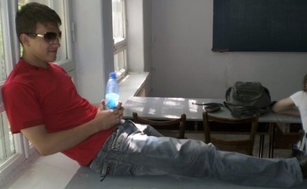

Вот и следующая страница, надеюсь вы рады что у меня получается, я очень рад ^_^
Другая сылка
Если заметно то эта ссыла отличалась от первой по цвету как фоновом так и при нажатии, этому я тоже научился.
Также к этой ссылке добавил подсказку.
Еще какртинка теперь является ссылкой на саму себя но откроется в новом окне и вокруг неё рамочка, к моему несчастью некоторые браузеры не поддерживают рамочку :(.
Также я научился МАППИНГУ